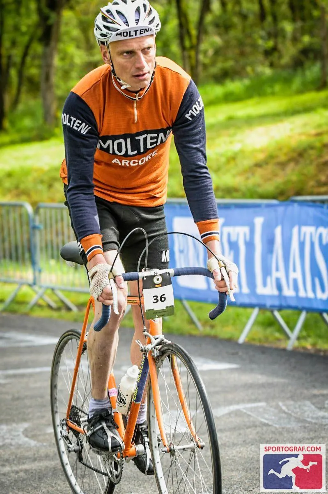
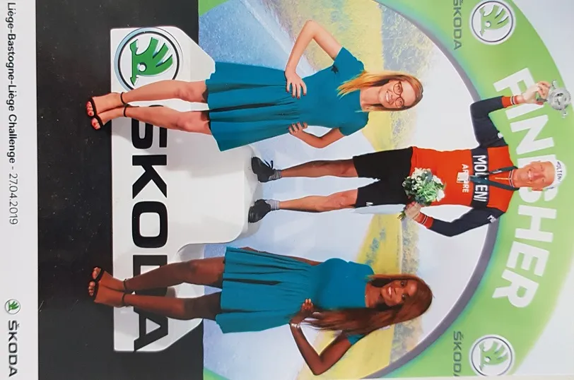
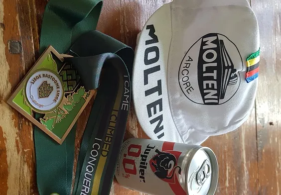
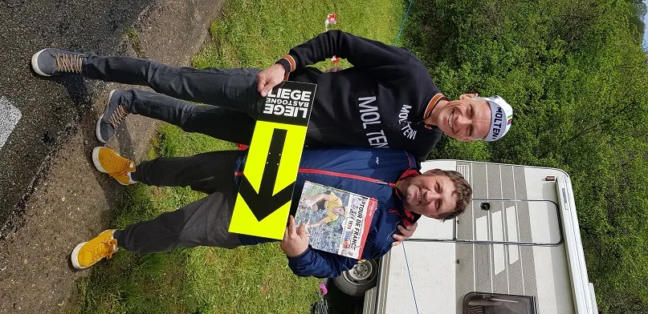

Lir i Liege

For 105’te gang afvikledes cykelhistoriens ældste klassiker – Liege-Bastogne-Liege – i den forgangne weekend.
I jagten på vigtige UCI-points, havde Squadra Molteni sendt Kristian Blume afsted mod Ardennerne, med besked om at levere et topresultat. Løbet er med sine ca. 260 km og 4000 højdemeter garant for en benhård afslutning på forårsklassikersæsonen. I år havde de Vallonske vejrguder dog strammet skruen yderligere, ved at diske op med gråvejr og temperaturer fra 6-11 grader.
Vi kørte rekognoscering på bl.a. Cote de la Redoute og La Roche-aux-Facons dagen før løbet. Vejret var fint, men vi vidste, at det ville blive en helt anden historie næste morgen, fortæller Kristian, der på stålcyklen var i godt selskab med Michael Cubbin og hans VeloWear-hold, der dog havde flere metaldele i ryg og skuldre end på deres kulfiberraketter. Faktisk var vejrudsigten så ringe, at Kaptajn Bjørnsteen fra Molteni HQ aftenen før løbet sendte en telex til Ardennerne med følgende tekst:
“Lange ærmer godkendt herfra. Stop”
Underforstået: der køres fortsat i shorts!
Starten gik lørdag morgen på våde veje og efter 3-4 timer med småregn og modvind mod Bastogne, var humøret ikke voldsomt højt. Læderskoene sejlede og fingrene var næsten for stive til at skifte gear. De hvide strømper var blevet grå.
Helt ærligt – hvis HY’en var kørt op på siden af mig og havde tilbudt et 100 km lift, så havde jeg sgu taget det, beretter Kristian. Men altså – Grane og HY’en befandt sig i Jylland, så jeg måtte æde mig selv et par gange undervejs. Der kan vi så tale om kold mad…
Op og ned, op og ned, igen og igen, og…
Efter Bastogne startede den kuperede del af løbet med Cote de Saint-Roch (1,0 km, 11,2%) og så gik det ellers slag i slag med bl.a. Cote de Wanne, Stockeu, Rosier inden La Redoute (2,0 km, 8,9%), med 39 km til mål.
På La Redoute kom der solstrejf gennem skyerne og moralen kom for alvor tilbage, hvilket var godt, for benene var efterhånden absolut værdiløse, sukker Kristian, der dog havde åbnet en godt hul til stålfeltet på de første 225 km. Med “Eddy, Eddy” tilråb fra de lokale fans blev Redoute forceret og forspringet holdt heldigvis til målet i Liege.

Mislyd på opløbsstrækningen
De sidste kilometer var kritiske pga. en tiltagende knirken, som lød mistænkeligt som en defekt krank. Cyklen var tung at træde og konkurrenterne nærmede sig. Efter spurten kunne Kristian dog med lettelse konstatere, at det bare var knæene, der skulle skiftes.
Efter lidt kysseri med Skoda-pigerne ventede belønningen – en stærkt imødeset belgisk øl – som dog viste sig at være en lille 0.0 % Jupiler. Kæmpe skuffelse og en opsang herfra til arrangørerne om at gøre det bedre næste år. Heldigvis blev der taget revanche senere på aftenen med beuf, frites, biere og crêpes sammen med VeloWear-drengene.


La Redoute
Søndag stod den på Fuglsang-hepning og storskærm på La Redoute. Først var der dog gensyn med Squadra Moltenis bedste belgiske ven og Merckx-aficionado, Eric Coppin, der for 15’ende gang overværede løbet. Vi ses til Grand Départ i Bruxelles, Eric!

Det omskiftelige Vallonske vejrlig kunne ikke dæmpe begejstringen over Jakobs sejr i hvide strømper, der satte et smukt liret punktum for en stor dansk weekend i Ardennerne.
P.S. Squadra Molteni kører ikke med ass-saver